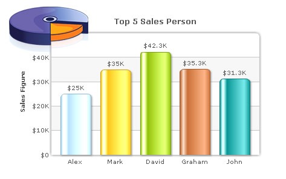
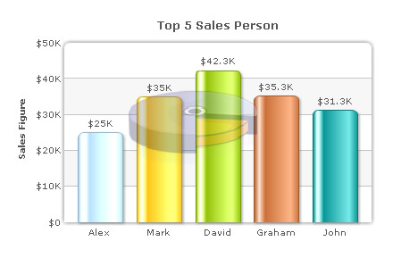

| XML/JSON Attributes for Loading External Logo |
You can load external logos at run-time to be displayed over the chart. The logos can be GIF/JPEG/PNG or SWF files that reside on the same sub-domain as the chart SWF. To load a logo, you use logoURL attribute of chart element as under: |
<chart yAxisName='Sales Figure' caption='Top 5 Sales Person' numberPrefix='$' useRoundEdges='1' bgColor='FFFFFF,FFFFFF' showBorder='0' exportEnabled='1' exportShowMenuItem='0' logoURL='fusionchartsv3.2-logo.png'> {
This results in:  |
| Please note that due to security reasons Flash Player does not allow you to load cross-domain files or files having absolute path. Hence, your logoUrl files should be of the same domain as the chart and should load from relative paths. |
| Configuring logo position |
The logo can be configured using <logoPosition='TL' ... > attribute to be shown in the following positions:
|
| Configuring logo opacity and scale |
Once the logo has loaded, its opacity and scale can be configured as under: |
<chart yAxisName='Sales Figure' caption='Top 5 Sales Person' numberPrefix='$' useRoundEdges='1' bgColor='FFFFFF,FFFFFF' showBorder='0' exportEnabled='1' exportShowMenuItem='0' logoURL='fusionchartsv3.2-logo.png' logoPosition='CC' logoAlpha='30' logoScale='110'> <set label='Alex' value='25000' /> <set label='Mark' value='35000' /> <set label='David' value='42300' /> <set label='Graham' value='35300' /> <set label='John' value='31300' /> </chart> {
"chart":{
"yaxisname":"Sales Figure",
"caption":"Top 5 Sales Person",
"numberprefix":"$",
"useroundedges":"1",
"bgcolor":"FFFFFF,FFFFFF",
"showborder":"0",
"exportenabled":"1",
"exportshowmenuitem":"0",
"logourl":"fusionchartsv3.2-logo.png",
"logoposition":"CC",
"logoalpha":"30",
"logoscale":"110"
},
"data":[{
"label":"Alex",
"value":"25000"
},
{
"label":"Mark",
"value":"35000"
},
{
"label":"David",
"value":"42300"
},
{
"label":"Graham",
"value":"35300"
},
{
"label":"John",
"value":"31300"
}
]
}
|
This results in:  |
| Linking the logo to external URLs |
You can even link the logo to an external URL by setting <chart ... logoLink='link in FusionCharts format'>. This link can open in same window, new window, pop-up windows, frames or even invoke JavaScript methods. |